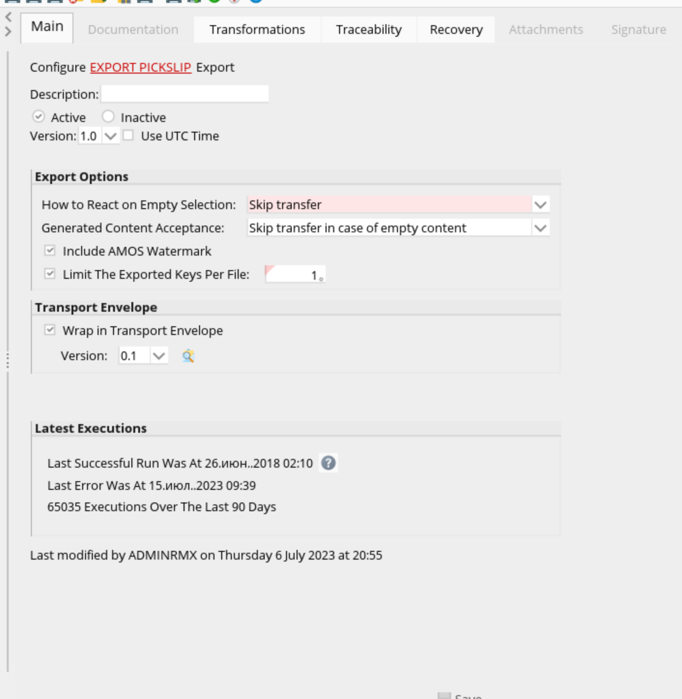
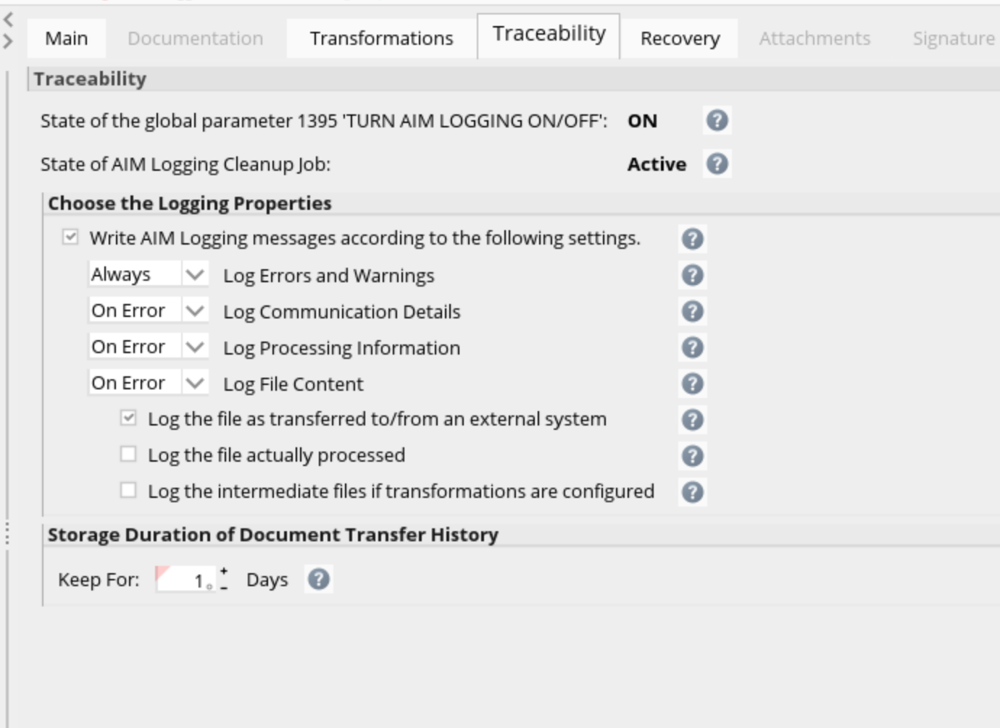
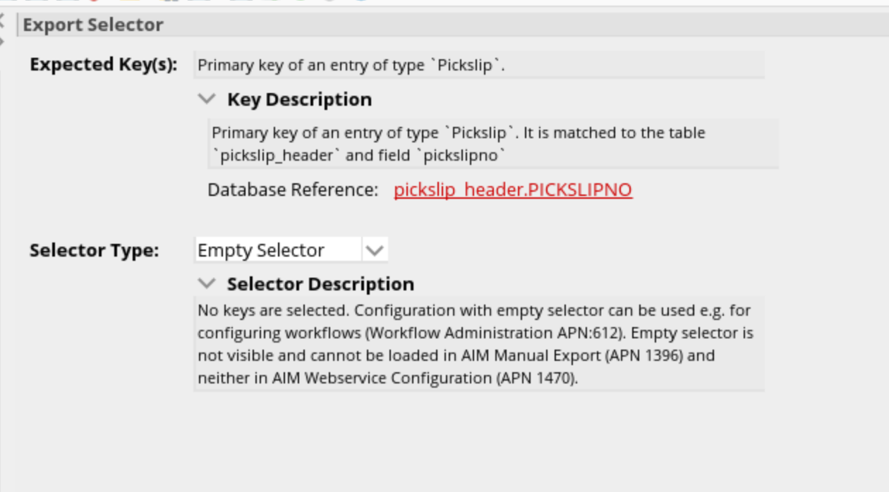
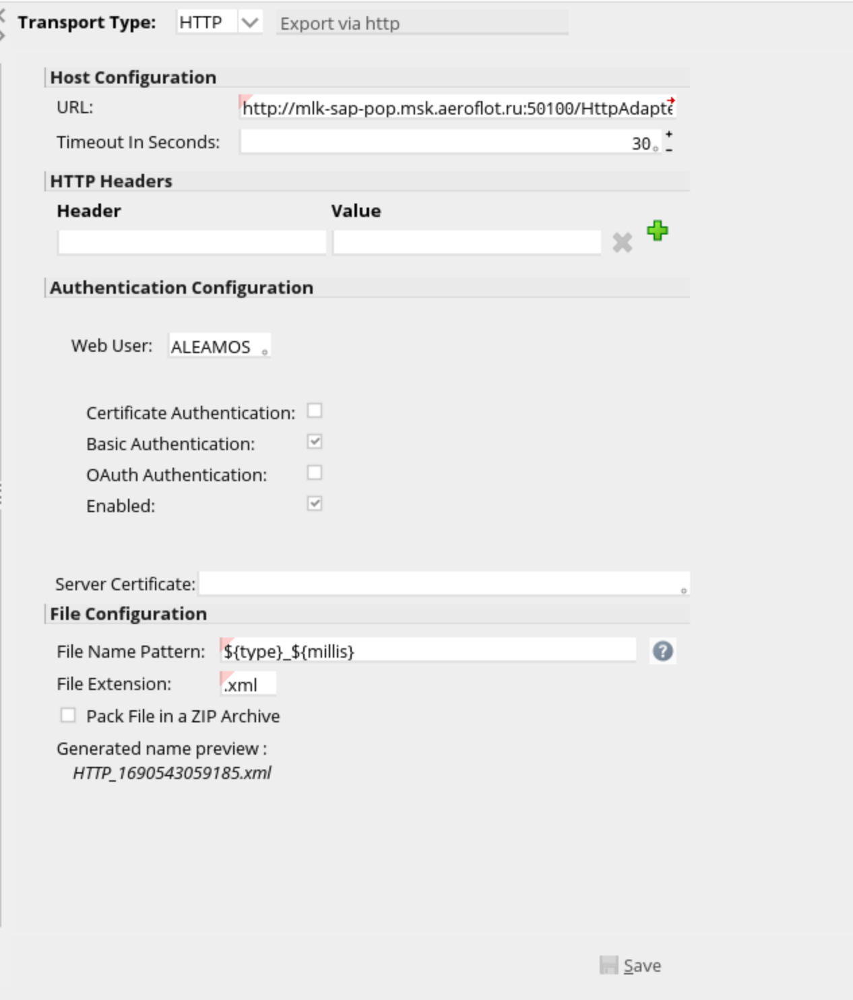
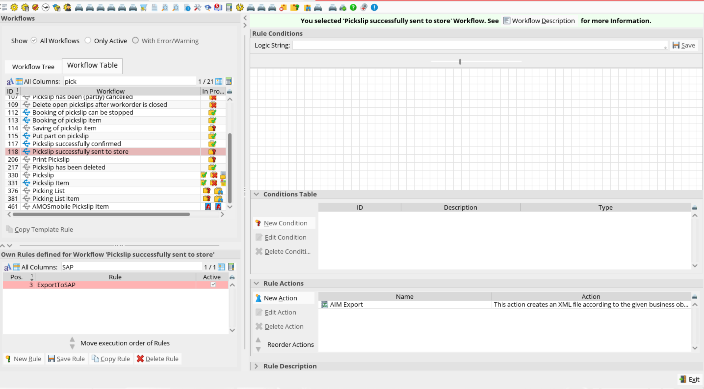
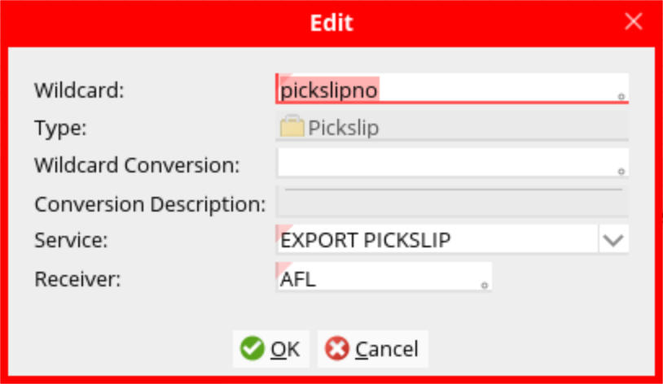
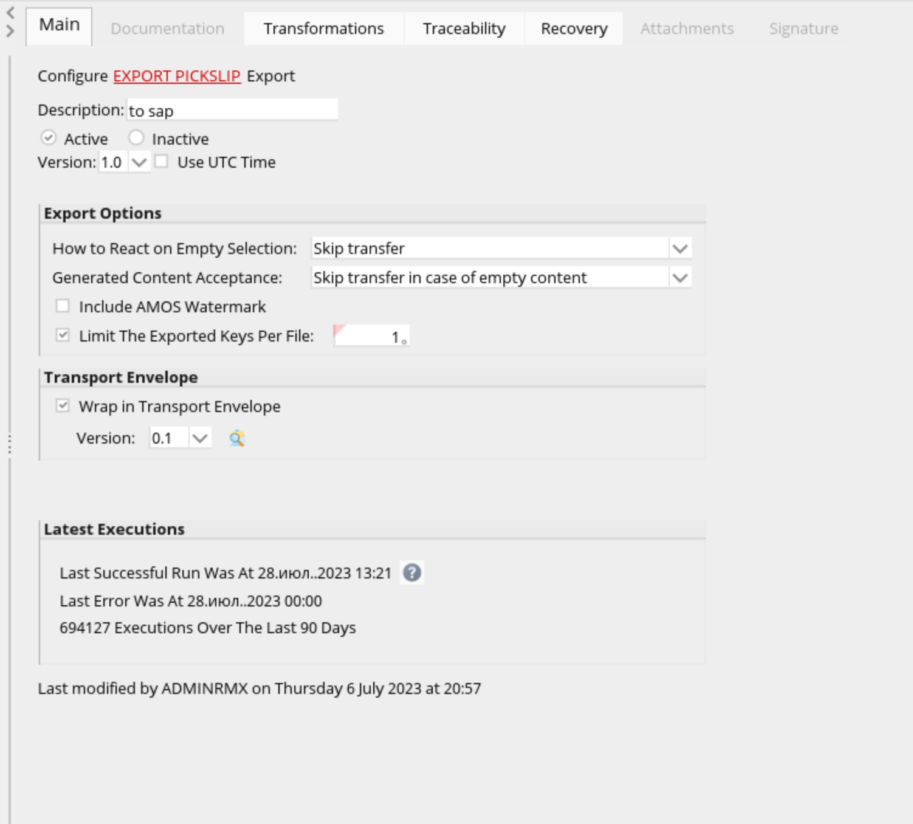
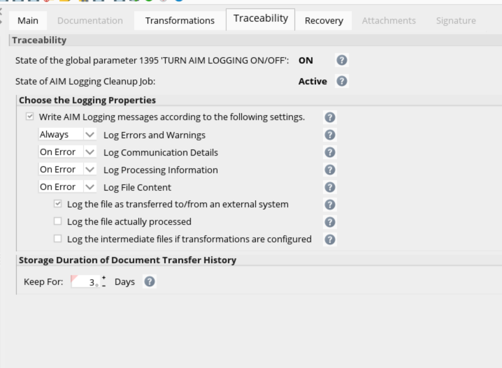
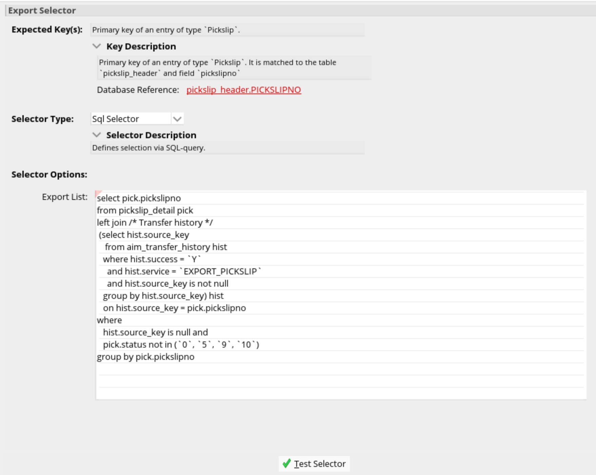

Created by Филипенков Никита Константинович, last modified on июл. 31, 2023
AFL
В APN 1404 Main&Traceability
На вкладке MAINнеобходимо заполнить в соответсвии со скриншотом ниже:

На вкладке Traceability настроить в соответсвии со скриншотом ниже:

Настройка селектора в APN 1404
В Configuration Detail выбираем подвкладку selector и в окне Export Selector заполнить данные:

Настройка Transport в APN 1404
В Configuration Detail выбираем подвкладку transport и в главном окне заполнить данные:

Настройка WorkFlow для формирования XML файла
В APN 612 находим WorkFlow 188 - "Pickslip successfully sent to store" и создаем ExportToSAP и активируем. Скрин настроек ниже:


SCHEDULER
В APN 1404 Main&Traceability
На вкладке MAINнеобходимо заполнить в соответсвии со скриншотом ниже:

На вкладке Traceability настроить в соответсвии со скриншотом ниже:

Настройка селектора в APN 1404
В Configuration Detail выбираем подвкладку selector и в окне Export Selector заполнить данные:

Ниже представлен SQL запрос для указания в Selector Options:
select
pick.pickslipno
from pickslip_detail pick
left join /* Transfer history */
(
select hist.source_key
from aim_transfer_history hist
where hist.success = 'Y'
and hist.service = 'EXPORT_PICKSLIP'
and hist.source_key is not null
group by hist.source_key) hist on hist.source_key = pick.pickslipno
where
hist.source_key is null and
pick.status not in ('0', '5', '9', '10')
group by pick.pickslipno
Настройка Transport в APN 1404
В Configuration Detail выбираем подвкладку transport и в главном окне заполнить данные:
{kind=link}
{kind=link}
{kind=link}
{kind=link}
{kind=link}
{kind=link}
{kind=link}
{kind=link}
{kind=link}
{kind=link}
{kind=link}